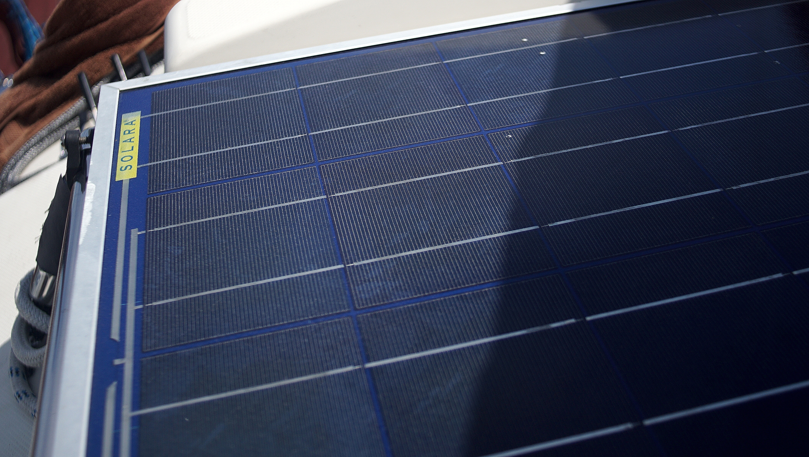
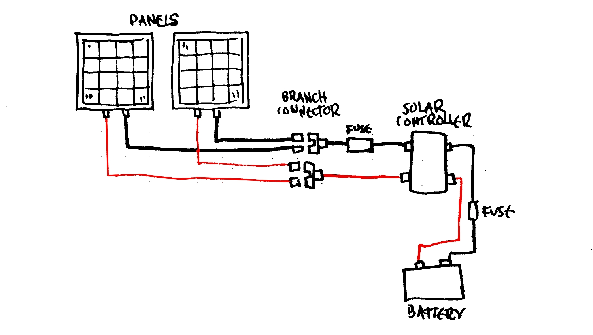

solar tips
Tips, info or tricks we learned on solar along the way. We reserve the right to be wrong (we're still learning).
View our energy and solar setup, or read about power on a sailboat.
What to choose?
The kind of panel you choose depends entirely on space and your budget. Although, someone on a small budget on a small boat may struggle, because the cheaper the panel the larger it is. 100W polycrystalline or thin film panels need to be much larger to match the output of a similarly-sized monocrystalline panel.
Choosing flexible panels is a good option, but they don't last long and will cost more in the long run (unless you choose ETFE panels, see below for coating types).
We have one 90W polyscrystalline panel on deck, and it works well, but we also got it for cheap. It is heavy, and occupies more space than our 100W monocrystalline panel.
Here are the different types of panels available out there, along with their advantages/disadvantages.
Monocrystalline. Darker in color, each cell is cut from a single silicon crystal, they are more efficient overall. They yield the highest output while occupying less space, but do better in warm weather. Up to 26 years performance. Available in hard and flexible form. Expensive.
Polycrystalline. Lighter, blue in color, the cells are composed of multiple, smaller crystals. They are less efficient than monocrystalline in lower light situations, but are cheaper to manufacture and therefore cheaper to buy. Available as hard panels. Up to 25 years performance.
Thin film. Solid black in appearance, made by depositing a photovoltaic substance onto a solid smooth surface. The four main substances are Amorphous Silicon, Cadmium Telluride, Copper Indium Gallium Selenide, and Dye-Sensitized Solar Cells—technically all different, but they all fall under the category of thin film panels. They are less efficient, but cheap to produce. High temperatures and shading have less impact on these solar panels.
Types of coating used in flexible solar panels
ETFE( Ethylene tetrafluoroethylene). A fluorine-based plastic. ETFE were created to help make robust flexible panels. It was created with high corrosion resistance and is considered to have the same long life span as tempered glass when used in the solar industry. Unlike most flexible panels, it is less prone to cracking, delamination and corrosion. Up to 10 years lifespan.
PET. A kind of polyester-based plastic. Affordable and light. Has a short lifespan of 5 years, prone to delamination and corrosion.
Deck installation
Install hard panels with an air space underneath to permit the panel to cool down. Warm temperatures produce a decline in the panel voltage of approximately 1V for every 12°C(22°F) to 15°C(27°F) temperature rise.
Parallel wiring
On a 12V system solar panels ought to be connected in parallel so the voltage stays the same. With panels in parallel, the amperage of each panel is added up, and the performance of one panel is not dependent on the performance of another. This is important on a boat because at one point or another, one of the panels will have shade from the mast, radar post, boom etc. Multiple panels connected in parallel offer the best performance. Wiring panels in parallel requires a thicker wire gauge to accomodate higher passing current.
To wire multiple panels in parallel you'll need MC4 branch connectors, or T connectors.
Adding panels to a systems is easy with branch connectors, this is how you connect them in parallel. A 3-way branch connector accepts 2 wires, and combines them into one, so a connector with two positives become one positive, and the same applies to the negatives side. These two wires will in turn connect to the solar controller.
In short, things to remember:
- Voltage stays the same
- Amps are added up
- Can perform if one panel is partially shaded
- Thicker wiring
- Requires extra gear like branch connectors
Wire sizing
When it comes to sizing wires, the smaller the number, the bigger the cable (counter-intuitive, we know).
Important to note that UL cables(AWG, American Wire Gauge) are larger than SAE(European standards). Some wires will display wire thickness in mm or inches, to find out their AWG equivalent view this table.
Example
- 2x100W panel
- at 17.40V
- 5 Amps each
- Distance to controller is 15 ft
In the sample above, we've got two 100W panels with each running to the branch connector at 17.40V, each outputting 5 Amps. Passing the branch connector the wires are now connected in parallel, and we have to add up the amps. We now have 10 amps, while the voltage remains the same at 17.40V. The solar charge controller than takes the 17.40V and regulates it down to 12V (most boats run on 12V systems) and will be charging the batteries at 15.83 amps (see below to see how i got that number).
To calculate how the solar controller will regulate the system from a higher voltage—like 17.40V from our example—to 12V, use the formula below...
The current I in amps (A) is equal to the power P in watts (W), divided by the voltage V in volts (V):
I(A) = P(W) / V(V)
190W / 17.40V = 15.83 Amps
Now that we know how much voltage and amps run at each part of our system we can start sizing the wires, and we can choose a solar controller.
To calculate the wiring gauge for your system, we recommend Circuit Wizard by Blue Sea.
The size of the wiring depends on the distance between each section too.
Solar controller
To size a solar controller, add up the amperage from your current solar panels. Panels with combined amperage of 10 amps would require a 10-amp or 15-amp controller.
If you want to charge more than one battery bank (if one is isolated), consider one with a dual charging function. Another option is to add an auxiliary charger to charge the other bank.
Fuses
If the controller doesn't go through a breaker panel, add a fuse between the solar panel and the controller, and between the controller and the battery (as close to the battery as possible). Fuses are sacrificial and protect your electrical components from damages caused by overcurrent. Breakers and fuses accomplish the same purpose, and can be used interchangeably.
To calculate the fuse size needed between the charge controller and battery bank match the amperage rating on the charge controller. For example, if you have a 15Amp charge controller use a 15Amp fuse.
To calculate the fuse size from the panel to the charge controller, add up the amperage of each panel and then add a 25% industry rule to figure out the fuse size.
For example, if you had 2x100W panels that each produces about 5 Amps, you would use this equation:
(2x5x1.25) = 12.5 Amps
In the above example you would need a 12.5 Amp fuse, and we'd recommend a 15 Amp fuse (next biggest number).
Connecting panels with dissimilar voltage
Connecting two panels with different voltages, you will get voltage to lower voltage. If one panel is 17.40V and the other 18V, when connected in parallel the voltage will drop to 17.40V.